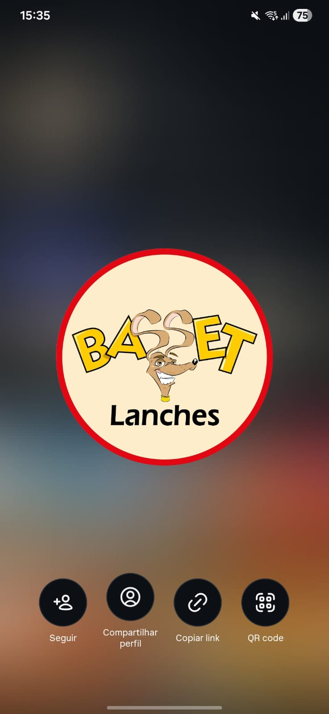

Receita da avó Regina
BIFE AZEDO
Iscas de carne com cebola. O prato-assinatura. Há mais de 30 anos no mesmo ponto.

JUVEVÊ · CURITIBA
"Não foi o meu bar que construíram na frente do museu.
Foi o museu que construíram na frente do meu bar."
Três gerações · um bar
Tudo começou com João Francisco de Souza Raposo, português que abriu banca de revistas, depois Cantina Açores, depois Barolho — sempre na esquina certa do Juvevê.
Em 1994, a 2ª geração — Kiko, Karina e Cássia — fundou o Basset Lanches. O nome é homenagem a Billy, o primeiro cachorro da família, que virou o logo da casa.
Hoje, João Luiz Lavalle Raposo toca o bar como 3ª geração. Os clientes que vinham com o pai trazem os filhos. O bife azedo — receita da avó Regina — segue o mesmo desde o começo.
O que a gente faz de melhor
Receita da avó Regina
Iscas de carne com cebola. O prato-assinatura. Há mais de 30 anos no mesmo ponto.
Clássico curitibano
Filé bovino cru, cebola, cebolinha, sobre torrada. Patrimônio gastronômico do Paraná.
Petisco de boteco honesto. Crocante por fora, suculento por dentro.
Empanado, dourado, derretendo por dentro. Acompanha geleia.
Massa leve, recheio generoso. Acompanha limão.
Pra acompanhar o pôr-do-sol sobre o Niemeyer. Sempre na temperatura certa.
[ confirmar cardápio completo e preços com a casa ]
A varanda que olha o Olho
O Museu Oscar Niemeyer é vizinho. A nossa varanda é o melhor lugar de Curitiba pra ver o sol cair atrás dele com um chope na mão.

Clientes no Google
★★★★★
"Boteco com ambiente maravilhoso, vista excelente pro Museu do Olho e por sol. As porções de bife azedo, carne de onça e coração crocante são deliciosas, excelentes pratos típicos da cidade."
— Matheus Andrade · Local Guide
★★★★★
"Porções gostosas a preço justo, cerveja gelada e uma bela vista para o MON. Ótima opção para ver o pôr do sol."
— André V. K. · Local Guide
★★★★★
"Bar bacana, cerveja gelada, sanduíche delicioso, preços amigáveis. Atendentes educados, vista boa do museu. Bom lugar pra jogar conversa fora."
— Michael Dias · Local Guide
Contato
Endereço
R. Marechal Hermes, 1024
Juvevê · Curitiba/PR · 82590-300
Em frente ao Museu Oscar Niemeyer
Horário
Todos os dias · 15h–00h
R$ 40–60 por pessoa
Telefone